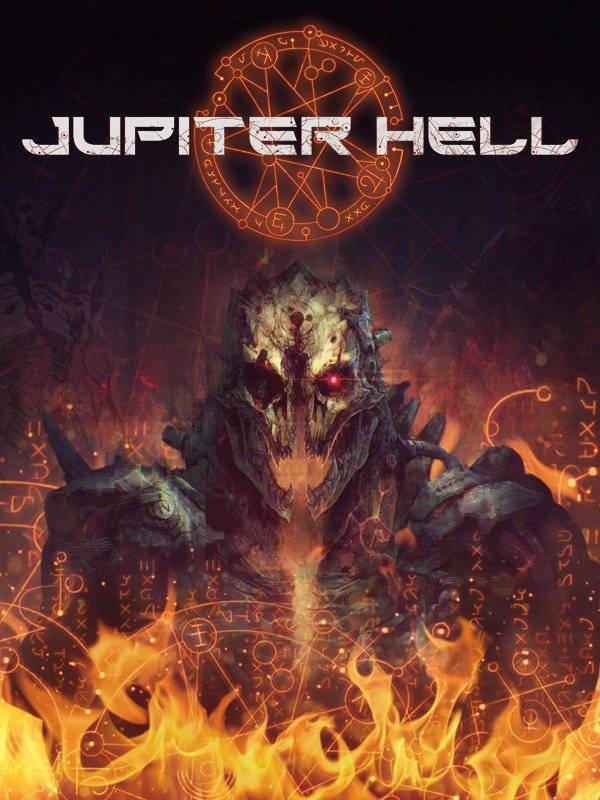

Jupiter Hell
Details
|  | |
| Playtime | Not Played |
| Last Activity | Never |
| Added | 08/07/2025 0:18:22 |
| Modified | 08/07/2025 0:18:57 |
| Completion Status | Not Played |
| Library | Gog |
| Source | GOG |
| Platform | PC (Windows) |
| Release Date | 05/08/2021 |
| Community Score | 80 |
| Critic Score | 90 |
| User Score | |
| Genre | Arcade Indie Role-playing (RPG) Shooter Strategy Turn-based strategy (TBS) |
| Developer | ChaosForge |
| Publisher | ChaosForge |
| Feature | Single Player |
| Links | Steam Official GOG YouTube Discord Twitch Uknown |
| Tag | |
Description
Jupiter Hell 1.0 is here!
A 20-year roguelike development story reaches its climax, as Jupiter Hell graduates Early Access and releases in full. Don't forget to take advantage of the 20% release discount - available for a limited time only!
Jupiter Hell is a classic, turn-based roguelike set in a 90s flavored sci-fi universe. Set on the moons of Jupiter, the game pits a lone space marine against overwhelming demonic forces. Rip and tear zombies, demons and unmentionable monstrosities, using classic weaponry such as shotguns, chainguns, railguns and the trusty chainsaw. All to the shine of CRT monitors and the tune of heavy metal!
Frequent updates!
Most recent:- 1.0 - Dante!
- 0.9.12 - Trials!
- 0.9.11 - Curio!
- 0.9.10 - Medusa!
- 0.9.9 - More!
- 0.9.8 - Message!